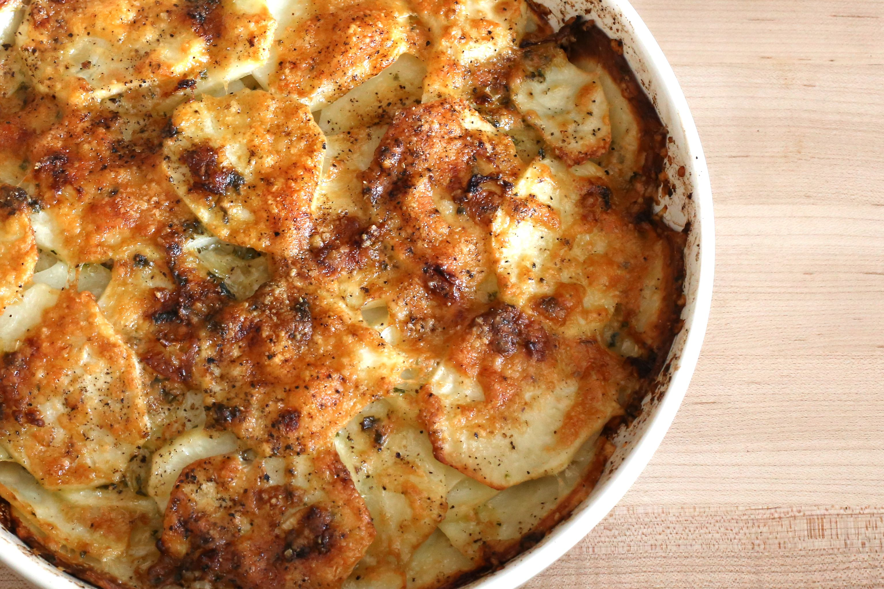

Cheese Potato

Cheese Potato
Don't let the basic ingredients fool you—this recipe has anything but ordinary taste. The hearty potatoes have a wonderful cheesy flavor and melt in your mouth. They're simple to prepare and impressive to serve. — Deborah Amrine, Grand Haven, Michigan
Ingridients
- 6 large potatoes, peeled and thinly sliced
- 3 tablespoons butter
- 1 teaspoon salt
- 1/4 teaspoon pepper
- 1 cup whole milk
- 2 cups shredded cheddar cheese
- Minced fresh parsley
Steps
- In a large nonstick skillet, cook potatoes in butter until crisp-tender and lightly browned.
- Sprinkle with salt and pepper.
- Pour milk over all; cover and cook until milk is absorbed.
- Sprinkle with cheese; stir until melted.
- Garnish with parsley.